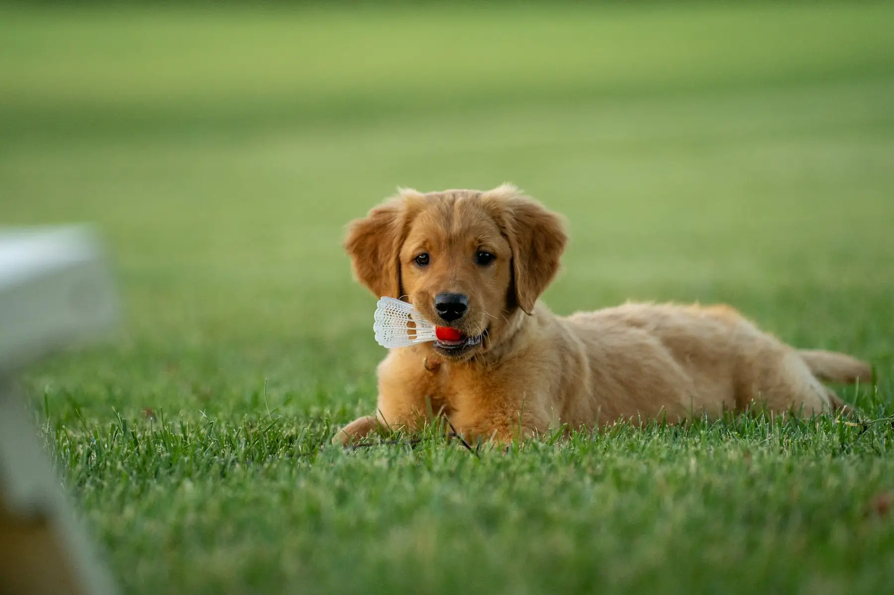
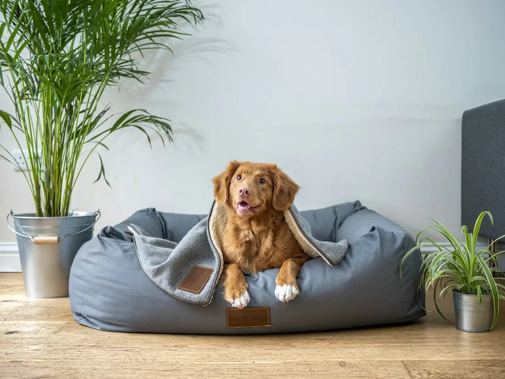
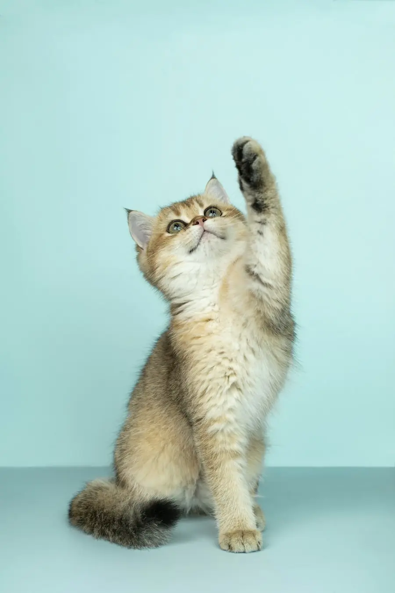
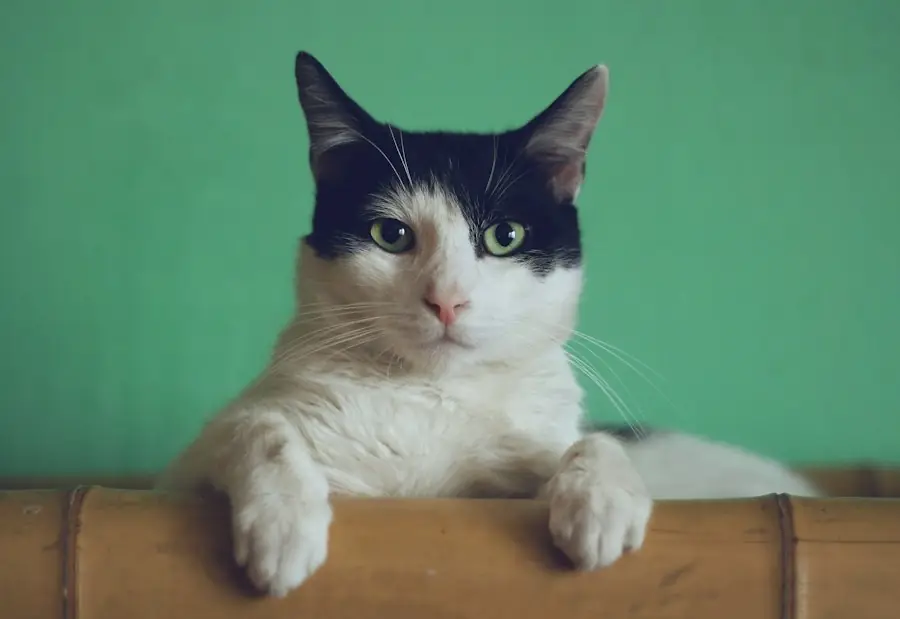

Selvilik Caddesi 97/A, Fıstıkağacı
Mahallenin veterineri, akşam 23:00'e kadar açık.
Kedi ve köpeğiniz için muayene, aşı, kısırlaştırma ve tahlil. İş çıkışı uğrayın, yürüme mesafesindeyiz.
Her gün 09:00 - 23:00
4,9 Google puanı, 222 değerlendirmeHizmetler
İlk aşıdan küçük ameliyatlara, kedi ve köpeğinizin günlük sağlığı için ihtiyacınız olan her şey.
-
Muayene ve kontrol
Halsizlik, iştahsızlık, deri ve kulak sorunları. Yıllık genel kontrol.
-
Aşı ve parazit
Yavru aşıları, kuduz, iç ve dış parazit. Zamanı gelince hatırlatırız.
-
Kısırlaştırma
Ameliyat öncesi kontrol, güvenli anestezi ve dikiş takibi.
-
Küçük cerrahi ve pansuman
Yara, apse ve kesik bakımı. Gerekirse dikiş ve düzenli pansuman.
-
Tahlil
Kan ve idrar tahlili ile sorunun kaynağını hızlıca buluruz.
-
Tırnak, kulak ve diş bakımı
Evde zor olan bakımlar, sakin ve kısa bir ziyarette.

Örnek görsel

Hakkımızda
Fıstıkağacı Veteriner Kliniği, Üsküdar Selvilik Caddesi'nde bir mahalle kliniği. Komşularımızın kedilerini ve köpeklerini adlarıyla tanımayı seviyoruz.
Akşam 23:00'e kadar açık olduğumuz için işten sonra koşturmadan gelebilirsiniz. Muayenede acele etmez, ne yaptığımızı her adımda anlatırız.
Tam başka bir yer ararken karşımıza Fıstıkağacı Veteriner Kliniği çıktı.
Google'daki bir değerlendirmeden
Neden Fıstıkağacı?
-
Akşam 23:00'e kadar
İş çıkışı, akşam yemeğinden sonra bile gelebilirsiniz.
-
Yürüme mesafesinde
Selvilik Caddesi üzerinde, mahallenin içindeyiz.
-
4,9 Google puanı
222 komşumuzun değerlendirmesi.
-
Tanıdık bir ekip
Her gelişinizde hayvanınızı ve geçmişini bilen bir ekip.
Sık sorulan sorular
Başka bir sorunuz varsa bizi arayın ya da WhatsApp'tan yazın.
WhatsApp'tan sorunAkşam randevusuz gelebilir miyim?
Evet, 23:00'e kadar açığız. Gelmeden önce ararsanız sizi bekletmeden alırız.
Yavru kedi ya da köpek aldım, ilk ne yapmalıyım?
İlk muayeneye getirin. Genel kontrol, parazit uygulaması ve aşı takvimini birlikte planlarız.
Kısırlaştırma için en uygun yaş nedir?
Türe, ırka ve sağlık durumuna göre değişir. Muayenede hayvanınız için en doğru zamanı konuşuruz.
Ücretler hakkında önceden bilgi alabilir miyim?
Evet. Telefonda ya da muayene başında tahmini maliyeti paylaşırız.
Sokak hayvanlarına yardım ediyor musunuz?
Bulduğunuz yaralı bir sokak hayvanı için bizi arayın, neler yapabileceğimizi birlikte konuşalım.
Randevu alın
Formu doldurun, sizi arayıp saati birlikte belirleyelim. Acil bir durumda formu beklemeden arayın.